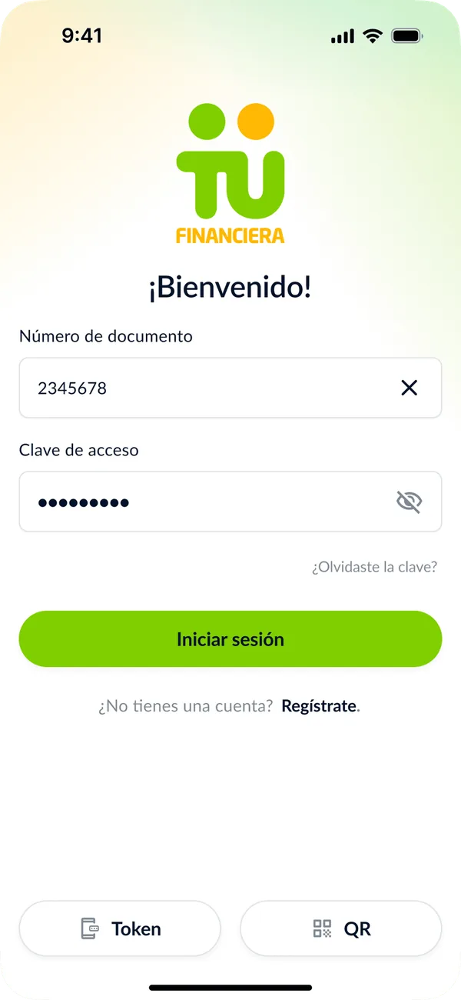
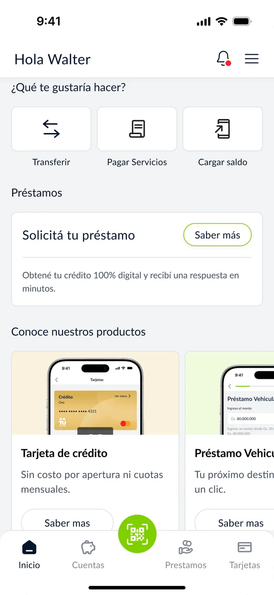
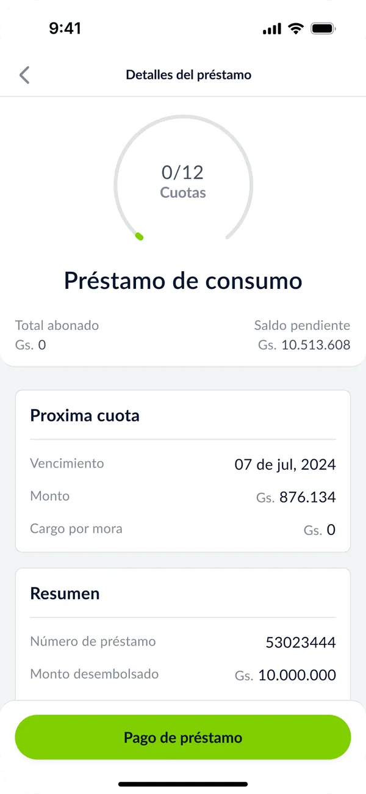
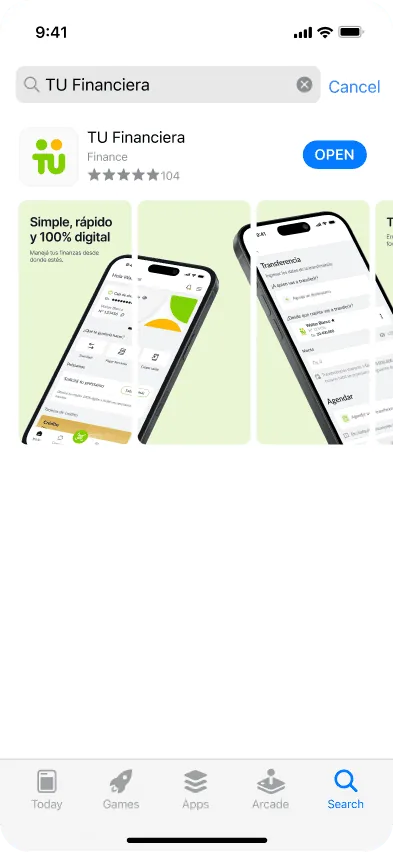
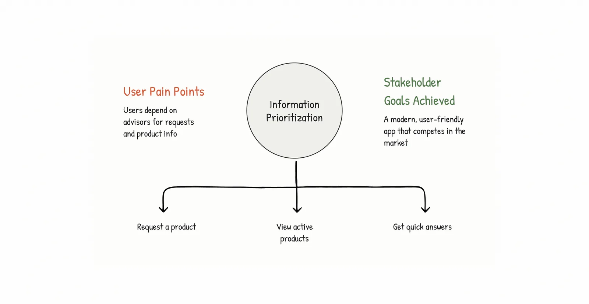
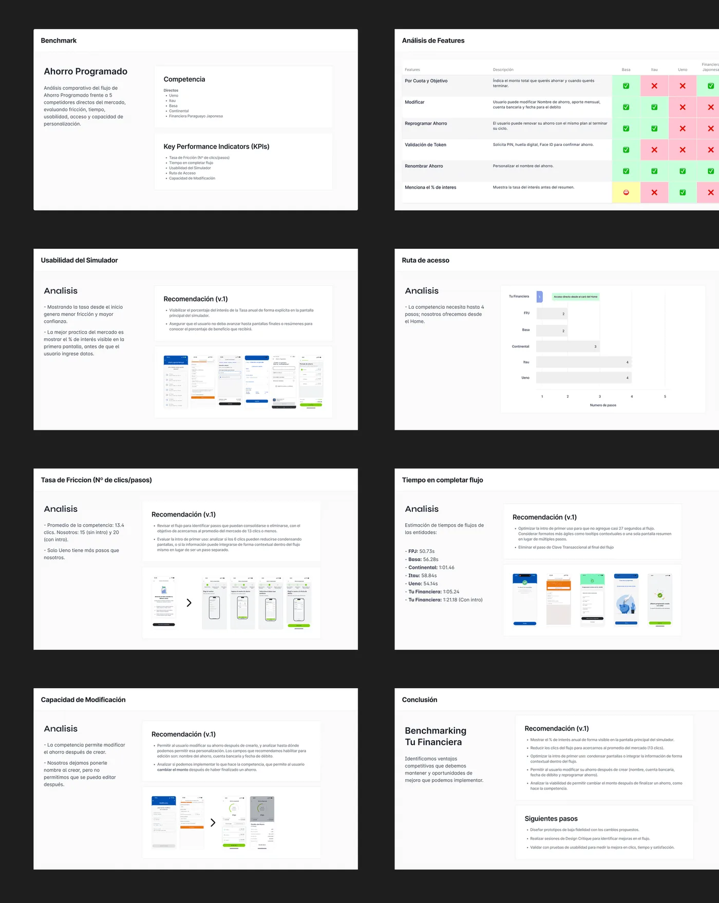
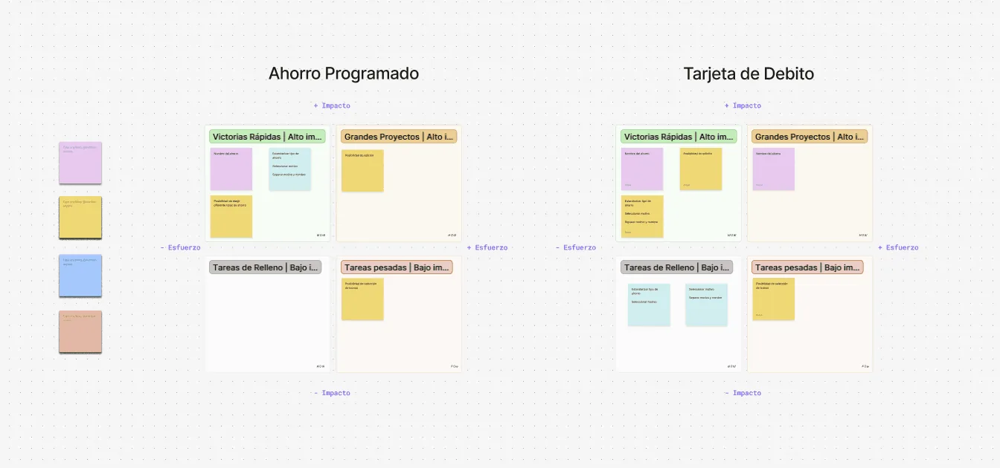
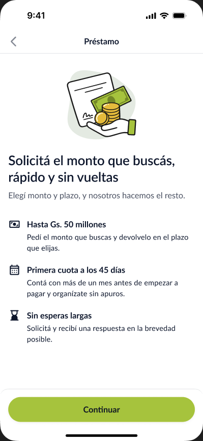

Case study · 01 · Fintech mobile app
Tu Financiera
Led the redesign of a fintech app serving 80,000+ active users (25,000 before launch).
In a team of three, I owned the core experience of the Tu Financiera app: automated sign-up, self-service product requests, 14 new flows, and a design system built from scratch.
From an advisor on WhatsApp to an app people run themselves
The redesigned app lets people sign up, see every product they own, and request new ones without waiting for an advisor. Active users grew from 25,000 before launch to more than 80,000 five months after.
NPS at launch
Satisfaction with the new experience
Sign-ups in the first month




A Paraguayan fintech still run like a branch
Tu Financiera offers loans, savings, and debit and credit cards to people in Paraguay. Its app existed, but most of the real work, like opening a product or checking what you owed, still happened in conversations with an advisor.
Competitors had already moved those same processes into their apps. Tu Financiera was falling behind on the experience, not on the products.
Mostly older adults, used to asking a person
Customers reached the company by WhatsApp, by phone, or by going all the way to a branch. Most of them are older adults, which shaped many of the decisions that followed.
I joined in October 2024, as the redesign plan was starting. The team was still missing essential processes for improving the UX and for building features based on what customers actually need.
One request, one advisor, and a WhatsApp thread
Opening any financial product meant messaging the sales team over WhatsApp, sending documents back and forth, and waiting for a reply while someone processed the data by hand. Every request depended on a person being available, and opening a product took a long time.
Once a product was open, users still couldn’t see it in the app. Balances, installments and due dates lived with the advisor, not with the customer.
Slow for customers, heavy for the team
- 01No clear flows: the app didn’t guide people through any task end to end
- 02Every process went through a human advisor
- 03No visibility into products or balances
The challenge wasn’t a more modern app. It was giving people a better way to interact with their own products.
Listening to the business, then looking at the market
I worked directly with the company’s two owners and prepared the material my manager presented to the board. There were no customer interviews during the redesign, so customer priorities came from support data: it showed where things broke, if not why.
A benchmark of fintech and banking apps in Paraguay (Itaú, Ueno, Familiar, Continental, Basa and others), plus some international ones, showed what customers already expected. An impact-vs-effort evaluation then ranked what would remove the most friction at a cost the team could actually ship.



Three findings shaped the direction
- 01Advisor dependency was the bottleneck behind most support contact
- 02Competitors already offered digitally what Tu Financiera handled manually
- 03Users had no visibility into their own products
Then, the first customer interviews
Management was hesitant about interviewing customers, so we started with one feature: scheduled transfers. I ran 12 interviews, with 10 customers and 2 staff members. What we heard changed the design, as the next chapter shows.
From “assisted” to self-service
Each problem got its own pillar. Instead of redesigning screen by screen, we asked what a customer should be able to do alone, and built the app around those tasks.
- The problemThe pillar that answers it
- Sign-up waited on an advisor to process dataAutomated onboarding
- Opening a product meant a WhatsApp conversationSelf-service product requests
- Customers couldn’t see what they ownedProduct visibility
- An outdated look and inconsistent screensNew UI style and a custom design system
Visibility for everything, or what users need right now
Across the redesign and the work after launch, the same tension kept coming up: stakeholders wanted visibility for everything, and I pushed for what users needed in that moment. These are the decisions where that choice mattered most.
A focused home, not a catalog
Stakeholders wanted every product on the home screen so each one would get exposure. Our users are mostly older adults, and every extra option on the first screen makes the app harder and slower to use.
I proposed a home that shows only our star products, so customers reach the most important ones first, and backed each point with UX laws, mainly Hick’s Law: the more choices on screen, the longer it takes to decide.
Trade-off: the other products lost their spot on the home and the direct exposure that came with it. A clear home for the products that matter most was worth more than impressions for all of them.
Scheduling doesn’t belong in the middle of a transfer
72% of scheduled transfers were never executed. The entry point lived inside the transfer screen, and the manager wanted to keep it there because it’s the most visited screen in the app. The interviews showed two problems: customers thought scheduling was a mandatory step of the transfer, and most didn’t understand the feature at all. One staff member didn’t know it existed until a customer mentioned it.
Explaining it inside the transfer would slow down people who just want to send money fast. 9 of 10 customers asked for visible access to their scheduled transfers, so I moved “Tus agendamientos” (your scheduled transfers) to the savings account view, where customers already check their money. The amount is the main data point (10 of 10 asked for it), with a heads-up before the debit.
Trade-off: we gave up the most visited entry point in the app, so fewer people find the feature by accident. In exchange, customers see their scheduled transfers right next to their balance and get warned before the debit.
Don’t cancel on the first missed payment
71% of failed scheduled transfers failed because of insufficient balance, and the original feature simply cancelled them. Cancelling can’t be the first option. Now, when a debit can’t go through, the customer chooses: transfer now, add it to next month, or skip this month.
Trade-off: three options instead of one makes the moment less simple. We accepted that because one month without balance should not erase a schedule the customer set up on purpose.
Everything a customer needs, without asking anyone
The new app follows the customer’s path: get in, see what you have, keep track of it, and ask for something new.
Sign up without waiting for an advisor
Onboarding became an end-to-end flow with automatic validation. The app checks that ID photos are legible before sending them, so people sign themselves up instead of waiting for someone to process their data.
Why: one simple entry point, because customers now sign themselves up instead of waiting for an advisor. The ID check runs before sending, so automatic validation doesn’t fail later and push the customer back to an advisor.
A home built around what you own
Home puts the everyday actions first (transfer, pay bills, top up), then only the star products: a loan prompt and a short product carousel, discoverable without a sales conversation.
Why: most users are older adults, and fewer choices mean faster decisions (Hick’s Law). See decision 01.
Every loan, visible at a glance
Each product gets its own detail screen. For a loan, a progress ring shows installments paid, followed by the next due date and amount, a summary, and a button to pay directly.
Why: balance and installments come first, because before the redesign customers couldn’t see their own products.
Ask for a product on your own
The flow that replaced the WhatsApp conversation. A loan request opens with the terms up front: up to Gs. 50 million, a first installment 45 days later, and a quick answer. Then customers choose the amount and term and complete the request themselves.
Why: it replaces the conversation that used to start every request, so customers know what they’re asking for before they share any data.

One language for 14 new flows
Designing 14 flows in a team of three only worked because they shared one system. I built Tu Financiera’s first design system from scratch during the redesign: tokens, styles, and 216 components, documented and synced with developers.
Read the Design System case study →Customers noticed right away
The app launched with an NPS of +73.5, with 80.6% promoters across 433 responses. Nearly 3,000 people signed up in the first month with minimal marketing.
Active users grew from 25,000 before launch to 35,000 a month after, and passed 80,000 five months after launch.
NPS at launch, 80.6% promoters across 433 responses
Satisfaction with the new experience
Sign-ups in the first month, minimal marketing
Components in the design system
Self-service starts behind the screen
Aligning the business was the hardest part. Automating onboarding and product requests reshaped tasks operations had always done by hand. Getting business and operations aligned took more work than the UI itself.
Launch is where listening starts. We kept listening after launch, and self-service demand ran deeper than the redesign had scoped. That pointed to the next stage of the product.
Research earns trust in steps. Our redesign priorities came from customer-support data, which showed where things broke but not why. Management was hesitant about interviewing customers, so we started with one feature, scheduled transfers, and those interviews changed the design. Next time I’d pair the data with interviews from the start.
Expanding the app with new features, improving our main products to drive higher adoption, and scaling the design system, including dark mode.
Let’s build something worth shipping
Briefs, collaborations, or a quick question. I read everything and usually reply within a couple of working days.